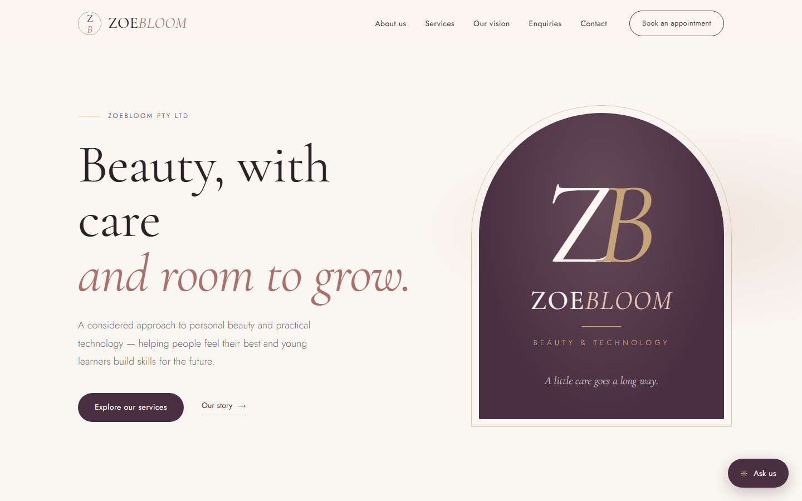

Featured · Business website
ZOEBLOOM — Beauty & Technology
The full website for my business: an elegant, responsive design with a services slideshow, enquiry forms, an AI chat assistant, and an appointment system where I confirm bookings and clients are notified by email and WhatsApp.